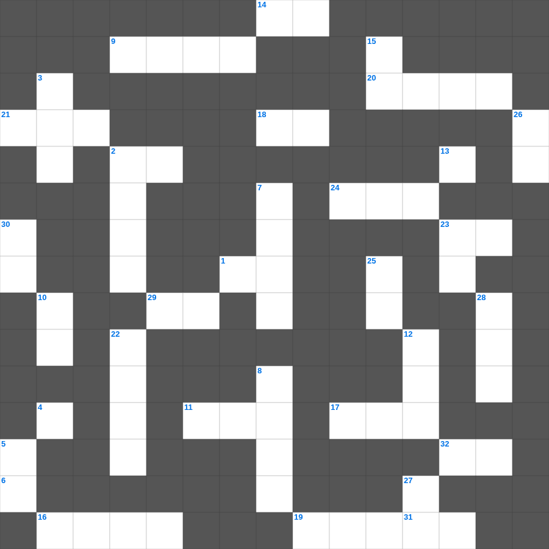

역대하: 성전 봉헌
📌 서비스 정의
십자가로세로는 교회 주보와 주일학교에서 사용할 수 있는 성경 기반 가로세로 퍼즐 서비스입니다. 성경 인물, 사건, 핵심 구절을 바탕으로 제작되었습니다. 온라인 풀이 및 인쇄 기능을 제공합니다.
무료로 즐기는 역대하 역대하 성경퀴즈! 35개의 힌트로 구성된 가로세로 낱말 퍼즐입니다. PC와 모바일 모두 지원되며, 정답을 바로 확인할 수 있어 혼자서도 쉽게 풀 수 있습니다.

📝 가로 힌트
1. 역대상 시작부분에 길게 나오는 것
2. 다윗이 성전 건축을 위해 모은 것
4. 이스라엘이 분열된 왕국 수
6. 다윗이 성전 기구를 만든 금
9. 다윗이 맡긴 재물
11. 고레스가 포로 해방을 명한 왕
13. 다윗이 모은 놋의 양
14. 히스기야가 제거한 뱀상
16. 요셉의 두 아들 중 하나
17. 성전 건축의 사명을 받은 아들
18. 백성 전체가 드린 제물
19. 북이스라엘 멸망의 수도
20. 여로보암이 세운 금송아지
21. 다윗이 정한 문지기 수
23. 아담부터 이스라엘 지파까지 기록된 것
24. 레위인의 직분 나이
29. 제사장이 입는 의복
31. 유다의 선한 왕 아사
32. 바벨론 포로 후 귀환
📝 세로 힌트
2. 히스기야가 개혁한 성전
3. 성전 문지기 직분
5. 노래하는 자들이 찬양할 때 사용한 것
7. 여로보암이 세운 이스라엘 왕
8. 유다의 선한 왕 히스기야
10. 여호사밧의 아들 요람
12. 성전을 짓고 봉헌한 왕
13. 번제단의 재료
15. 성전 기구의 재료
22. 솔로몬이 성전에 세운 기둥
23. 솔로몬이 성전 건축 전 받은 것
25. 이스라엘 열두 지파의 수
26. 레위인 중 노래하는 자
27. 홍수 후 족보의 중심
28. 다윗이 성전 터를 정한 곳
30. 성전에 가득했던 하나님의 임재
🧑🏫 교회 교육 자료 활용
이 퍼즐은 주일학교 교재 추천 자료로 활용할 수 있고, 주일학교 주보에 넣기 좋은 분량으로 구성되어 있습니다. 수업용 주일학교 교안에 활동지로 붙이거나, 예배 후 복습용 주일학교 공과교재로 바로 사용할 수 있습니다.
🏷️ 키워드
역대하 성경퀴즈, 역대하, 십자가로세로, 성경퀴즈, 말씀퀴즈, 가로세로퍼즐, 주일학교 교재 추천, 주일학교 주보, 주일학교 교안, 주일학교 공과교재